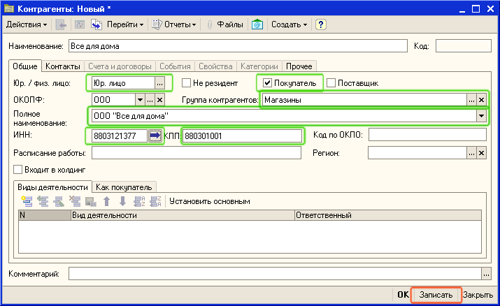
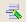
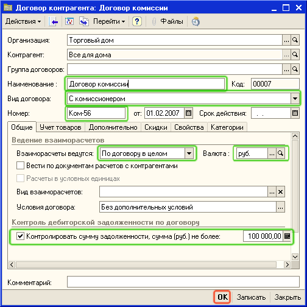
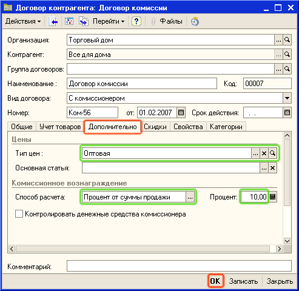
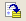
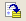
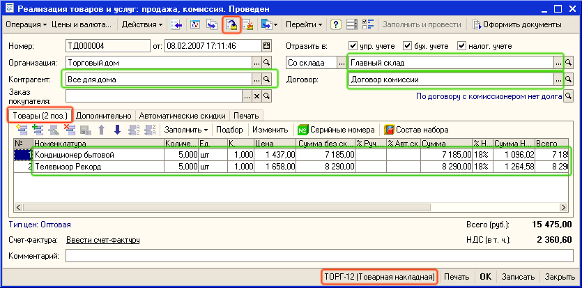
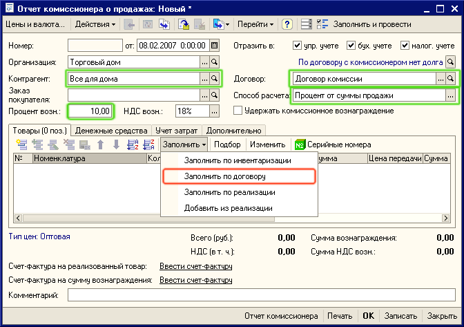
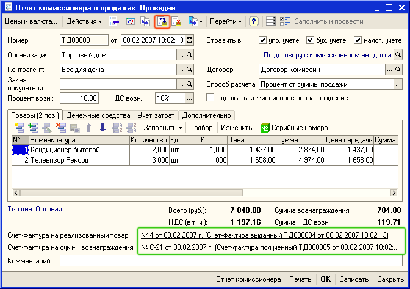
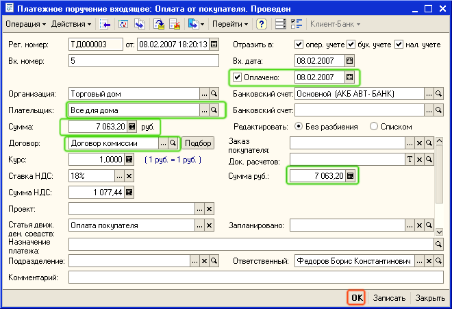

Пример. С магазином заключен договор комиссии. По договору комиссии товар передается в магазин. В конце отчетного периода магазин передает отчет о проданных товарах и перечисляет денежные средства на расчетный счет торгового предприятия. Торговое предприятие перечисляет магазину сумму комиссионного вознаграждения за продажу товаров.
1. Откройте группу Магазины в справочнике Контрагенты и введите в нее информацию о новом магазине. Для ввода информации используйте кнопку  (или нажмите клавишу Insert или выберите меню Действия — Добавить). Заполните информацию о контрагенте так, как показано на рисунке:
(или нажмите клавишу Insert или выберите меню Действия — Добавить). Заполните информацию о контрагенте так, как показано на рисунке:

2. Нажмите на кнопку Записать. Для контрагента будет создан основной договор с покупателем. Для изменения параметров договора перейдите на закладку Счета и договора. Для изменения параметров договора нажмите на кнопку  (или нажмите клавишу F2, или выберите пункт меню Действия - Изменить). Установите параметры договора так как это показано на рисунке:

3. Нажмите на кнопку Записать. Перейдите на закладку Дополнительно. Установите тип цен, по которым Вы будете передавать товар на комиссию в магазины, способ расчета комиссионного вознаграждения и процент комиссионного вознаграждения.

4. Нажмите на кнопку ОК. Вернитесь в форму контрагента, в ней также нажмите на кнопку ОК. Информация о новом магазине зафиксирована в списке контрагентов.
5. Для передачи товаров в магазин на комиссию оформите новый документ Реализация товаров и услуг. Для этого откройте пункт меню Документы - Продажи - Реализации товаров и услуг. Введите информацию о новом документе Реализация товаров и услуг, используя для добавления пиктограмму  . Заполните реквизиты документа так, как это показано на рисунке и проведите документ, нажав на кнопку .
. Заполните реквизиты документа так, как это показано на рисунке и проведите документ, нажав на кнопку .

6. Для печати документа нажмите на кнопку Торг-12(Товарная накладная).
Важно. Передача товаров на комиссию может быть оформлена с предварительным оформлением документа Заказ покупателя с использованием механизмов резервирования и размещения в заказах поставщиков.
7. При поступлении информации от магазина о проданных им товаров оформите документ Отчет комиссионера о продажах товаров. Для этого откройте пункт меню Документы - Продажи - Отчеты комиссионеров о продажах. Введите информацию о новом документе Отчет комиссионера о продажах, используя для добавления пиктограмму  . В новом документе введите информацию о контрагенте-магазине. Информацию о проданных товарах комиссионера можно заполнить вручную или используя кнопку Заполнить по договору, как это показано на рисунке.
. В новом документе введите информацию о контрагенте-магазине. Информацию о проданных товарах комиссионера можно заполнить вручную или используя кнопку Заполнить по договору, как это показано на рисунке.

Примечание. При использовании кнопки Заполнить по договору табличная часть будет заполнена всеми товарами, которые магазину были переданы на комиссию, но за которые он еще не отчитался.
Проведите документ Отчет комиссионера о продажах, нажав на кнопку .
Зарегистрируйте счет-фактуру на реализованный комиссионером товар, нажав на кнопку Ввести счет-фактура. Аналогичным образом зафиксируйте Счет-фактуру на сумму комиссионного вознаграждения.

При получении денежных средств от комиссионера оформите документ Платежное поручение входящее. Документ может быть введен на основании документа Отчет комиссионера о продажах. При оформлении платежа путем ввода на основании документа Отчет комиссионера о продажах в сумме оплаты будет учтено комиссионное вознаграждение.

Следующий раздел: «Продажа товаров в розницу в торговом зале (обобщенному покупателю)»